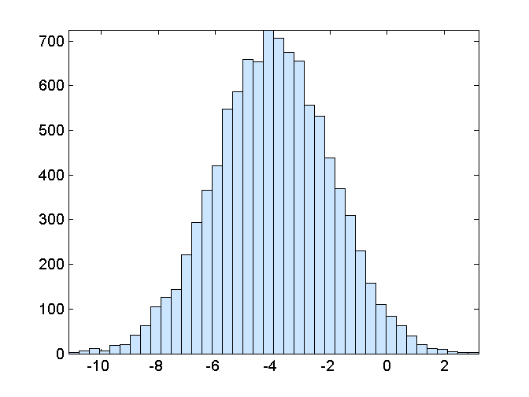
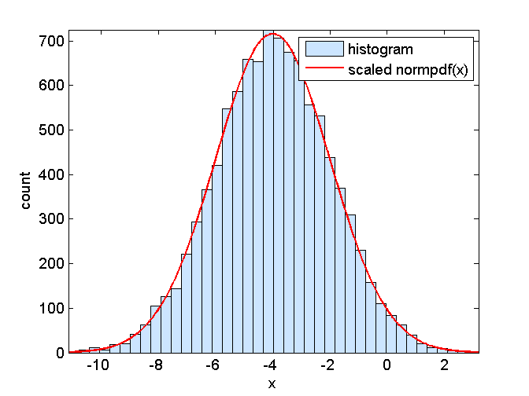
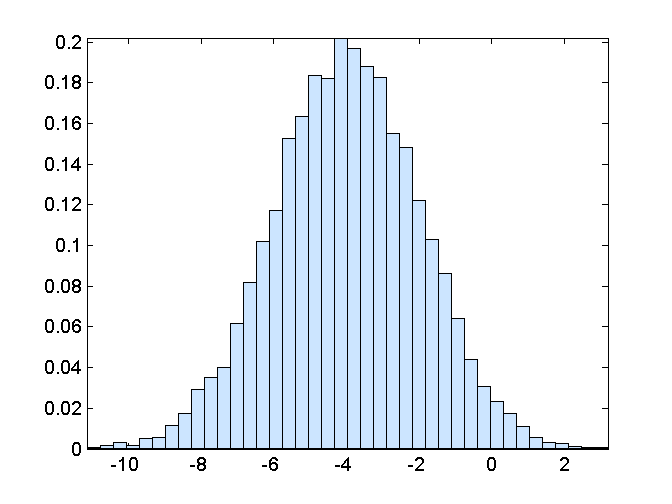
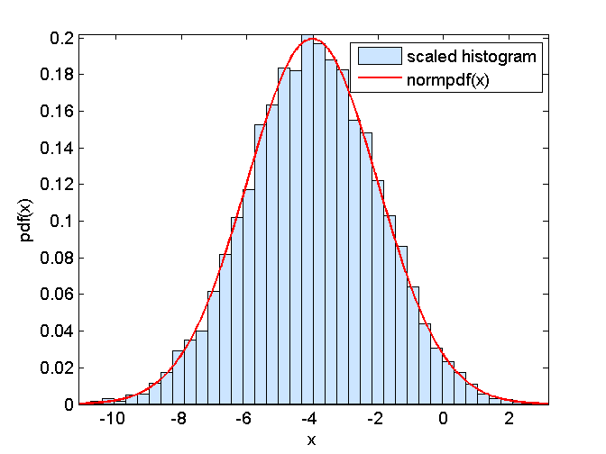

Contents
function demo_histogramNormpdf()
demo_histogramNormpdf: Comparison of histogram and normpdf
Parameters
mu = -4; sigma = 2;
M = 1e4;
X = mu + sigma*randn(M,1);
Compare histogram with scaled pdf
Plot histogram
figure(1);
nBins = 40;
hist(X,nBins);
axis('tight')
xMin = min(X);
xMax = max(X);
areaHistogram = (xMax-xMin)*M/nBins;

Plot scaled pdf
nPlot = 1000;
xPlot = linspace(xMin,xMax,nPlot);
yPlot = normpdf(xPlot,mu,sigma);
hold on
plot(xPlot,yPlot*areaHistogram,'r','LineWidth',1.5);
hold off;
xlabel('x'); ylabel('count');
legend('histogram','scaled normpdf(x)')

Compare scaled histogram with pdf
plot scaled histogram
figure(2);
[barHeight,barCenter] = hist(X,nBins);
bar(barCenter,barHeight/areaHistogram,1);
axis('tight')

plot pdf
hold on
plot(xPlot,yPlot,'r','LineWidth',1.5);
hold off
xlabel('x'); ylabel('pdf(x)');
legend('scaled histogram','normpdf(x)')
